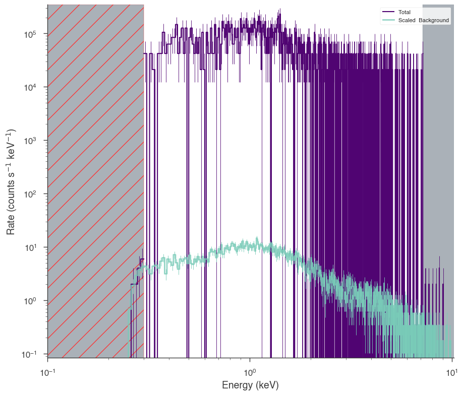
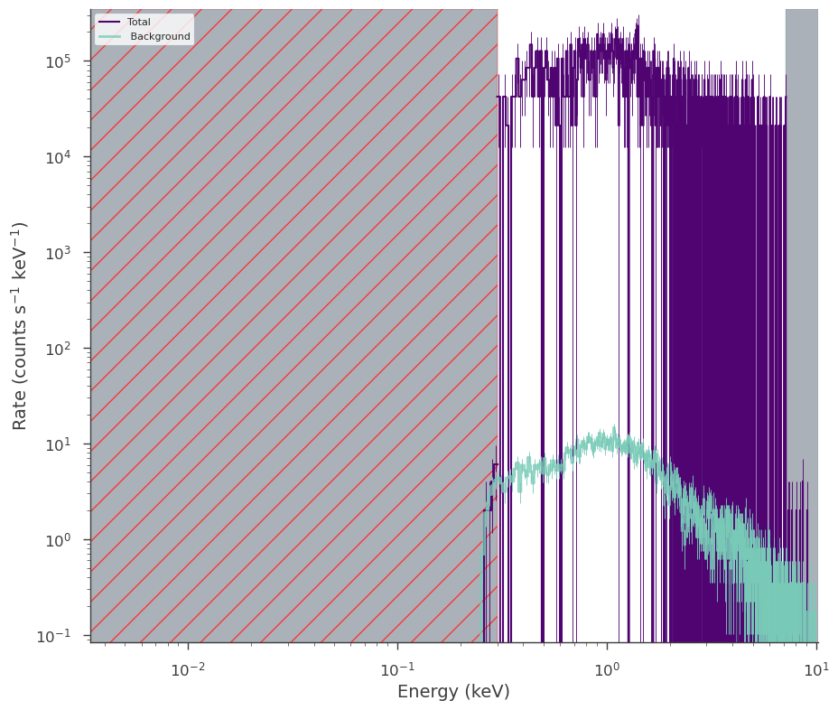
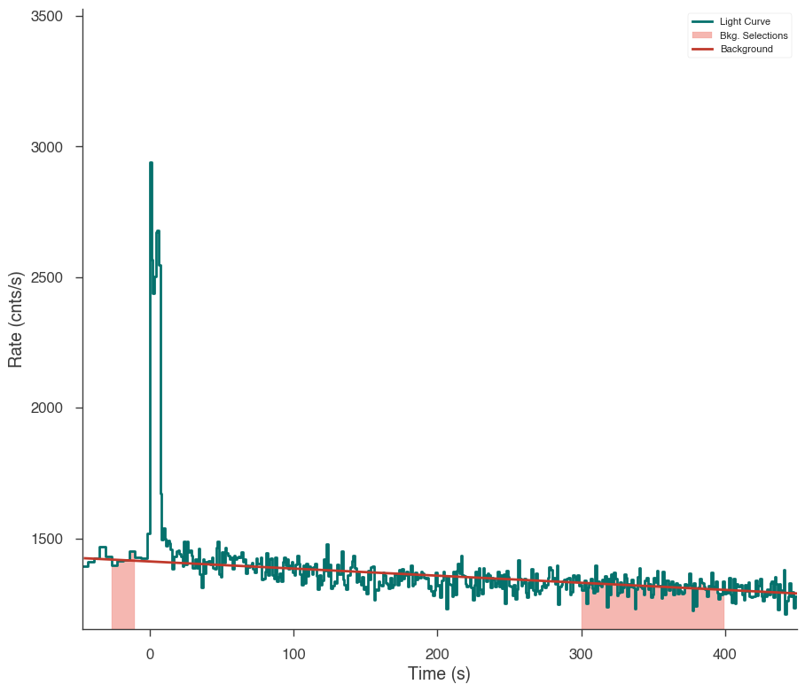
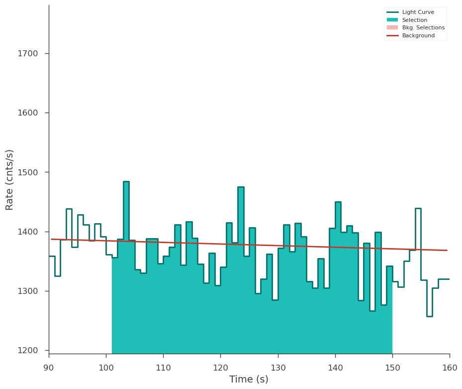
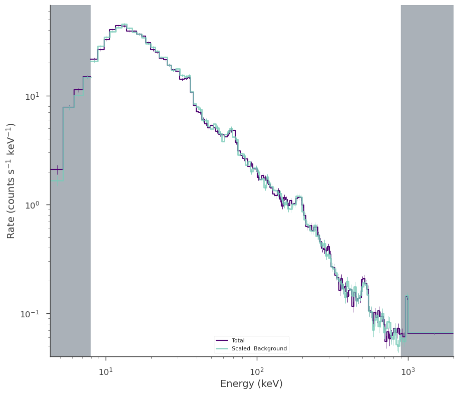
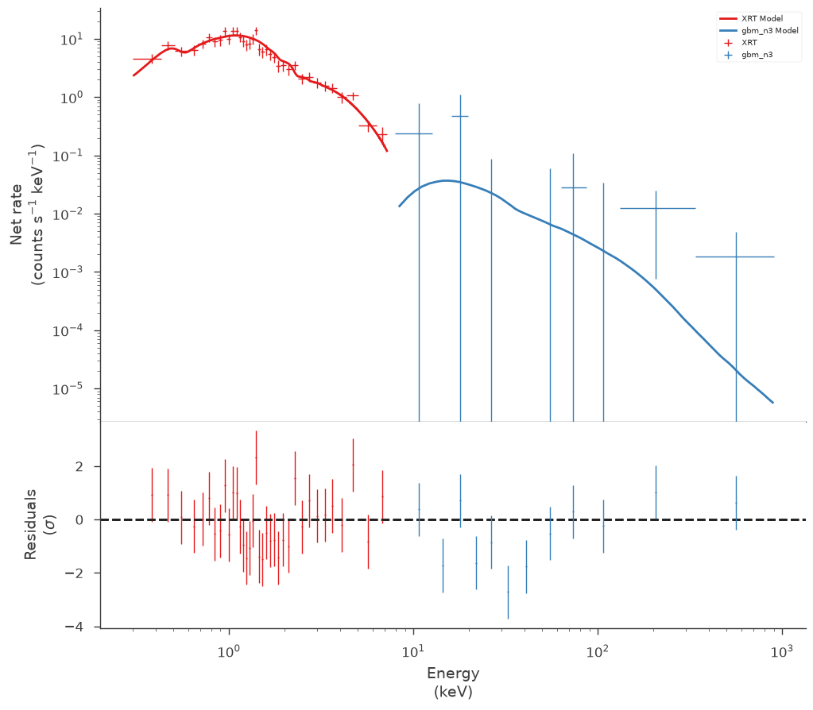
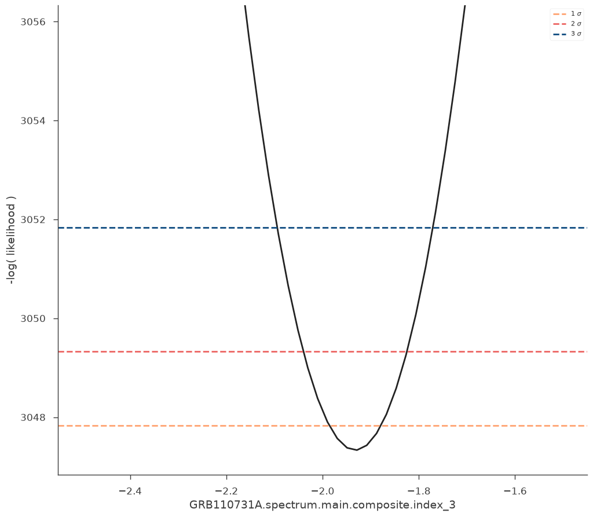
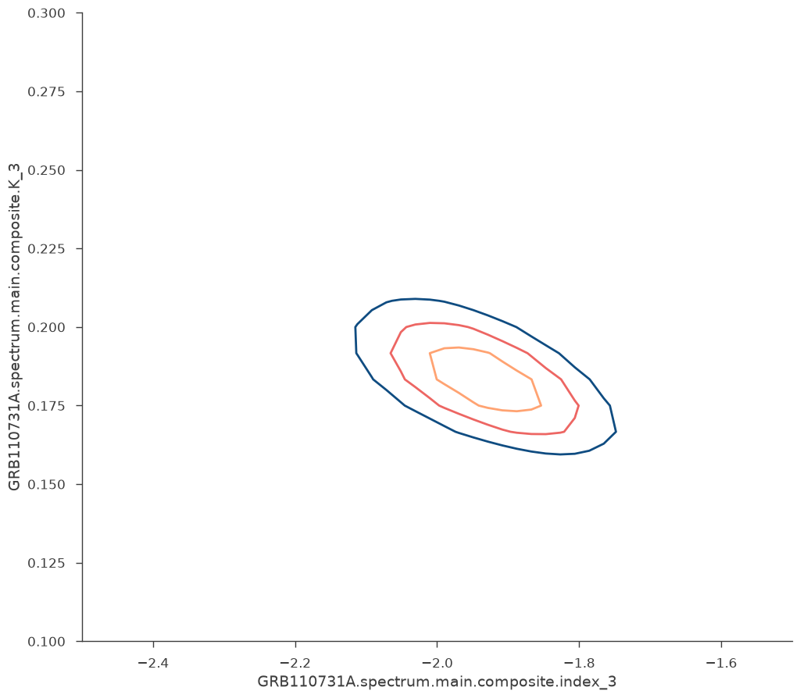
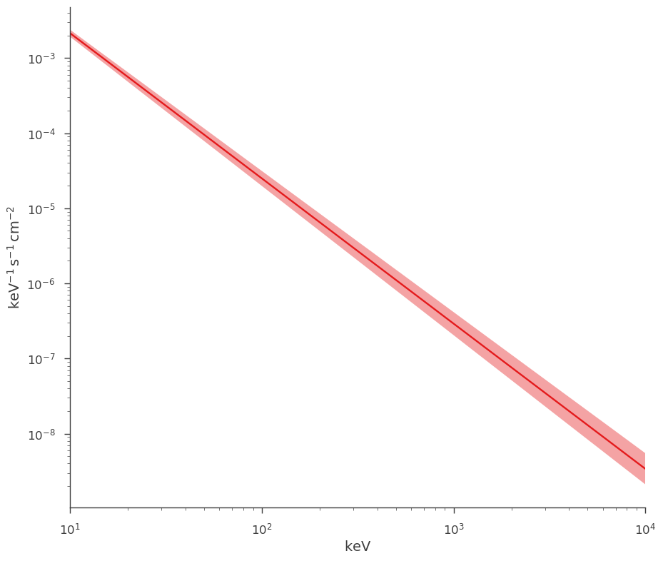
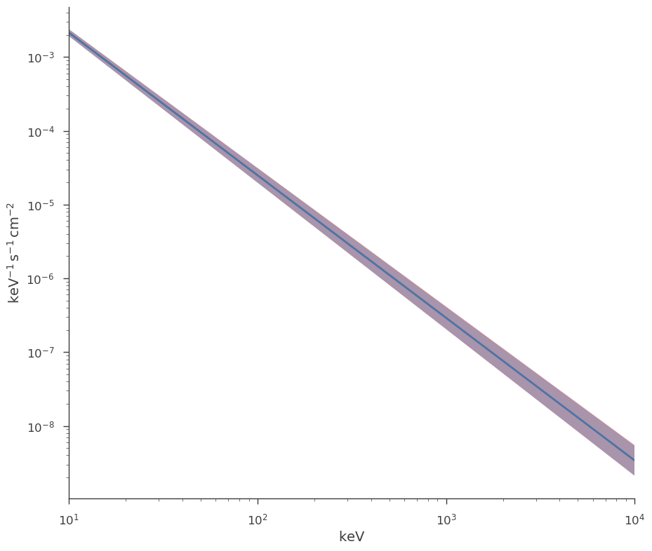

Joint fitting XRT and GBM data with XSPEC models
Goals
3ML is designed to properly joint fit data from different instruments with thier instrument dependent likelihoods. We demostrate this with joint fitting data from GBM and XRT while simultaneously showing hwo to use the XSPEC models form astromodels
Setup
You must have you HEASARC initiated so that astromodels can find the XSPEC libraries.
[1]:
import warnings
warnings.simplefilter("ignore")
import numpy as np
np.seterr(all="ignore")
[1]:
{'divide': 'warn', 'over': 'warn', 'under': 'ignore', 'invalid': 'warn'}
[2]:
%%capture
import matplotlib.pyplot as plt
from pathlib import Path
from threeML import *
from threeML.io.package_data import get_path_of_data_file
# we will need XPSEC models for extinction
from astromodels.xspec import *
from astromodels.xspec.xspec_settings import *
[3]:
from jupyterthemes import jtplot
%matplotlib inline
jtplot.style(context="talk", fscale=1, ticks=True, grid=False)
set_threeML_style()
silence_warnings()
Load XRT data
Make a likelihood for the XRT including all the appropriate files
[4]:
trigger = "GRB110731A"
dec = -28.546
ra = 280.52
p = Path("datasets/xrt")
xrt = OGIPLike(
"XRT",
observation=get_path_of_data_file(p / "xrt_src.pha"),
background=get_path_of_data_file(p / "xrt_bkg.pha"),
response=get_path_of_data_file(p / "xrt.rmf"),
arf_file=get_path_of_data_file(p / "xrt.arf"),
)
fig = xrt.view_count_spectrum()
ax = fig.get_axes()[0]
_ = ax.set_xlim(1e-1)
09:17:00 INFO Auto-probed noise models: SpectrumLike.py:486
INFO - observation: poisson SpectrumLike.py:487
INFO - background: poisson SpectrumLike.py:488
INFO bad channels shown in red hatching SpectrumLike.py:3071

[5]:
fit = xrt.view_count_spectrum(scale_background=False)
09:17:01 INFO bad channels shown in red hatching SpectrumLike.py:3071

Load GBM data
Load all the GBM data you need and make appropriate background, source time, and energy selections. Make sure to check the light curves!
[6]:
trigger_number = "bn110731465"
gbm_data = download_GBM_trigger_data(trigger_number, detectors=["n3"])
[7]:
# Select the time interval
src_selection = "100.169342-150.169342"
bkg_selection = ["-25.0--10.0", "300-400"]
ts = TimeSeriesBuilder.from_gbm_cspec_or_ctime(
name="gbm_n3",
cspec_or_ctime_file=gbm_data["n3"]["cspec"],
rsp_file=gbm_data["n3"]["rsp"],
)
ts.set_background_interval(*bkg_selection)
ts.save_background("n3_bkg.h5", overwrite=True)
fig = ts.view_lightcurve(-50, 450)
09:17:12 INFO Auto-determined polynomial order: 1 binned_spectrum_series.py:356
09:17:18 INFO None 1-order polynomial fit with the mle method time_series.py:426
INFO Saved fitted background to n3_bkg.h5 time_series.py:972
INFO Saved background to n3_bkg.h5 time_series_builder.py:430

[8]:
ts = TimeSeriesBuilder.from_gbm_tte(
"gbm_n3",
tte_file=gbm_data["n3"]["tte"],
rsp_file=gbm_data["n3"]["rsp"],
restore_background="n3_bkg.h5",
)
ts.set_active_time_interval(src_selection)
fig = ts.view_lightcurve(90, 160)
09:17:19 INFO Successfully restored fit from n3_bkg.h5 time_series_builder.py:166
INFO Interval set to 100.169342-150.169342 for gbm_n3 time_series_builder.py:274

[9]:
nai3 = ts.to_spectrumlike()
09:17:20 INFO Auto-probed noise models: SpectrumLike.py:486
INFO - observation: poisson SpectrumLike.py:487
INFO - background: gaussian SpectrumLike.py:488
Make energy selections and check them out
[10]:
nai3.set_active_measurements("8-900")
fig = nai3.view_count_spectrum()
INFO Range 8-900 translates to channels 4-123 SpectrumLike.py:1237

Setup the model
astromodels allows you to use XSPEC models if you have XSPEC installed. Set all the normal parameters you would in XSPEC and build a model the normal 3ML/astromodels way! Here we will use the phabs model from XSPEC and mix it with powerlaw model in astromodels.
With XSPEC
[11]:
xspec_abund("angr")
spectral_model = XS_phabs() * XS_zphabs() * Powerlaw()
spectral_model.set_units(u.keV, 1 / (u.keV * u.cm**2 * u.s))
spectral_model.nh_1 = 0.101
spectral_model.nh_1.bounds = (None, None)
spectral_model.nh_1.fix = True
spectral_model.nh_2 = 0.1114424
spectral_model.nh_2.fix = True
spectral_model.nh_2.bounds = (None, None)
spectral_model.redshift_2 = 0.618
spectral_model.redshift_2.fix = True
Solar Abundance Vector set to angr: Anders E. & Grevesse N. Geochimica et Cosmochimica Acta 53, 197 (1989)
With astromodels PHABS
We can build the exact same models in native astromodels thanks to Dominique Eckert. Here, there is no extra function for redshifting the absorption model, just pass a redshift.
[12]:
phabs_local = PhAbs(NH=0.101)
phabs_local.NH.fix = True
phabs_local.redshift.fix = True
phabs_src = PhAbs(NH=0.1114424, redshift=0.618)
phabs_src.NH.fix = True
phabs_src.redshift.fix = True
pl = Powerlaw()
spectral_model_native = phabs_local * phabs_src * pl
Setup the joint likelihood
Create a point source object and model.
Load the data into a data list and create the joint likelihood
With XSPEC models
First we will fit with the XSPEC model
[13]:
ptsrc = PointSource(trigger, ra, dec, spectral_shape=spectral_model)
model = Model(ptsrc)
[14]:
data = DataList(xrt, nai3)
jl = JointLikelihood(model, data, verbose=False)
model.display()
INFO set the minimizer to minuit joint_likelihood.py:1017
| N | |
|---|---|
| Point sources | 1 |
| Extended sources | 0 |
| Particle sources | 0 |
Free parameters (2):
| value | min_value | max_value | unit | |
|---|---|---|---|---|
| GRB110731A.spectrum.main.composite.K_3 | 1.0 | 0.0 | 1000.0 | keV-1 s-1 cm-2 |
| GRB110731A.spectrum.main.composite.index_3 | -2.01 | -10.0 | 10.0 |
Fixed parameters (8):
(abridged. Use complete=True to see all fixed parameters)
Properties (0):
(none)
Linked parameters (0):
(none)
Independent variables:
(none)
Linked functions (0):
(none)
[15]:
res = jl.fit()
fig = display_spectrum_model_counts(jl, min_rate=[0.5, 0.1])
Best fit values:
| result | unit | |
|---|---|---|
| parameter | ||
| GRB110731A.spectrum.main.composite.K_3 | (1.83 +/- 0.07) x 10^-1 | 1 / (keV s cm2) |
| GRB110731A.spectrum.main.composite.index_3 | -1.93 +/- 0.05 |
Correlation matrix:
| 1.00 | -0.57 |
| -0.57 | 1.00 |
Values of -log(likelihood) at the minimum:
| -log(likelihood) | |
|---|---|
| XRT | 2064.191129 |
| gbm_n3 | 983.140112 |
| total | 3047.331241 |
Values of statistical measures:
| statistical measures | |
|---|---|
| AIC | 6098.677371 |
| BIC | 6108.054080 |

[16]:
res = jl.get_contours(spectral_model.index_3, -2.5, -1.5, 50)

[17]:
_ = jl.get_contours(
spectral_model.K_3, 0.1, 0.3, 25, spectral_model.index_3, -2.5, -1.5, 50
)

[18]:
fig = plot_spectra(jl.results, show_legend=False, emin=0.01 * u.keV)

Fit with astromodels PhAbs
Now lets repeat the fit in pure astromodels.
[19]:
ptsrc_native = PointSource(trigger, ra, dec, spectral_shape=spectral_model_native)
model_native = Model(ptsrc_native)
[20]:
data = DataList(xrt, nai3)
jl_native = JointLikelihood(model_native, data, verbose=False)
model.display()
09:21:28 INFO set the minimizer to minuit joint_likelihood.py:1017
| N | |
|---|---|
| Point sources | 1 |
| Extended sources | 0 |
| Particle sources | 0 |
Free parameters (2):
| value | min_value | max_value | unit | |
|---|---|---|---|---|
| GRB110731A.spectrum.main.composite.K_3 | 0.183083 | 0.0 | 1000.0 | keV-1 s-1 cm-2 |
| GRB110731A.spectrum.main.composite.index_3 | -1.932241 | -10.0 | 10.0 |
Fixed parameters (8):
(abridged. Use complete=True to see all fixed parameters)
Properties (0):
(none)
Linked parameters (0):
(none)
Independent variables:
(none)
Linked functions (0):
(none)
[21]:
res = jl_native.fit()
fig = display_spectrum_model_counts(jl_native, min_rate=[0.5, 0.1])
Best fit values:
| result | unit | |
|---|---|---|
| parameter | ||
| GRB110731A.spectrum.main.composite.K_3 | (1.83 +/- 0.07) x 10^-1 | 1 / (keV s cm2) |
| GRB110731A.spectrum.main.composite.index_3 | -1.93 +/- 0.05 |
Correlation matrix:
| 1.00 | -0.57 |
| -0.57 | 1.00 |
Values of -log(likelihood) at the minimum:
| -log(likelihood) | |
|---|---|
| XRT | 2064.181385 |
| gbm_n3 | 983.140032 |
| total | 3047.321417 |
Values of statistical measures:
| statistical measures | |
|---|---|
| AIC | 6098.657722 |
| BIC | 6108.034432 |
[22]:
fig = plot_spectra(jl.results, jl_native.results, show_legend=False, emin=0.01 * u.keV)

Both approaches give the same answer as they should.
[ ]: